×
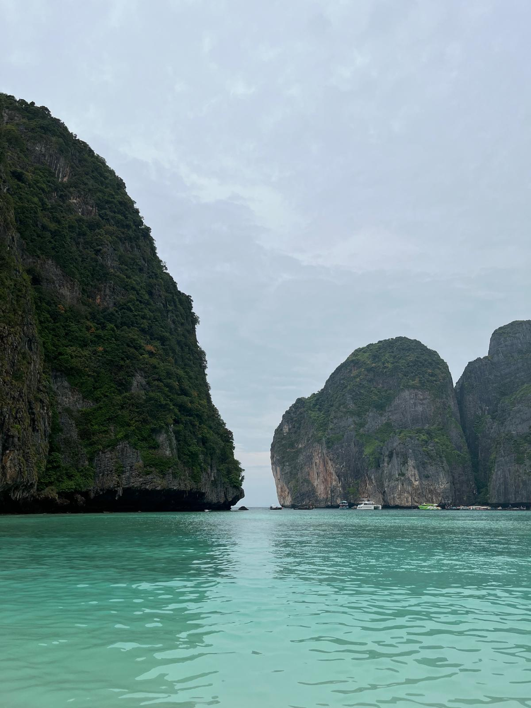
Phuket'te Yapılacak 10 Şey ve Daha Fazlası
Phuket’e yakında bir seyahat mi düşünüyorsunuz? O halde zamanınızı en iyi şekilde değerlendirmeye hazır olun!
Phuket Seyahat Rehberi
Phuket, Tayland’ın en çok bilinen adalarından biri olsa da, herkesin beklentisine
hitap
etmeyebilir.
Ada, Tayland’ın güneyine özgü sıcak ve nemli havasıyla tropik bir atmosfer sunuyor — bize göre
biraz
yoğun olsa da birçok kişi için bu egzotik ortamın bir parçası.
Adanın turistik popülerliği nedeniyle kalabalık oldukça fazla ve çoğu bölge gelişmiş bir turizm
yapısına sahip.
Açıkçası, Phuket’in her köşesinde uçsuz bucaksız turkuaz denizler veya tamamen doğal manzaralar
beklememek gerekiyor.
Evet, güzel plajlar var; ancak Tayland’ın diğer bölgelerine kıyasla burada doğa biraz daha
şehirleşmiş durumda.
Her ne kadar Phuket, bizim seyahat beklentilerimiz açısından tam olarak aradığımız yer olmasa
da,
10 gün boyunca gezip görmek, kültürünü daha yakından tanımak ve yerel yaşamı gözlemlemek
açısından
güzel bir deneyim oldu.
Sonuç olarak, Phuket daha çok rahatına düşkün, deniz ve şehir yaşamını bir arada isteyen
gezginler
için uygun bir rota.
Eğer siz de Tayland’ı keşfetme yolculuğunuzda bu adaya uğrayacaksanız, beklentilerinizi doğru
belirleyip rotanızı buna göre planlamanızı öneririz.
Para Birimi ve Fiyatlar
Tayland’ın resmi para birimi Baht (THB)’dir ve çoğu yerde nakit veya kredi kartıyla
ödeme yapılabilir.
Bankamatiklerden kendi bankanızın kartıyla para çekmek de mümkün; fakat çektiğiniz miktara
bağlı olarak komisyon oranları artabilir. Bu nedenle yüksek miktarlar yerine, ihtiyacınız kadarını
çekmek hem güvenli hem de daha ekonomik olacaktır.
2025 itibarıyla ortalama kurlar yaklaşık olarak:
1 Tayland Baht ≈ 1,29 TL (yaklaşık değer)
1 USD ≈ 33-36 THB civarındadır.
Phuket, Tayland’ın diğer şehirlerine göre biraz daha pahalı olsa da, hala Avrupa veya Türkiye
kıyasla oldukça uygun fiyatlı bir tatil imkânı sunar.
Sokak yemekleri 50–100 Baht civarındayken, sahil kenarında güzel bir akşam yemeği ortalama
300–600
Baht arasında olabilir.
Phuket’e Ne Zaman Gidilir?
Phuket, yıl boyunca sıcak ve nemli bir iklime sahiptir; ancak en ideal dönem Kasım–Nisan ayları arasıdır. Bu dönemde hava daha kuru, deniz ise dalgasız ve yüzmek için idealdir. Mayıs–Ekim arası yağmur sezonudur; fiyatlar düşer, kalabalık azalır ama hava değişken olabilir. Dolayısıyla bütçe dostu bir seyahat planlıyorsanız, yağmur sezonunun başı veya sonu iyi bir tercih olabilir.
Phuket'te Yeme - İçme
Phuket, Tayland mutfağının zengin tatlarını ve taze deniz ürünlerini deneyimlemek için mükemmel bir adadır. Ada olmanın avantajıyla karides, yengeç, kalamar ve balık gibi deniz ürünleri her restoranda taptazedir; özellikle plaj kenarındaki küçük restoranlar ve street food noktaları hem uygun fiyatlı hem de lezzetli seçenekler sunar. Pirinç, noodle, hindistancevizi sütü ve taze otlarla hazırlanan geleneksel Tayland yemekleri arasında Pad Thai, Tom Yum çorbası, çeşitli köri çeşitleri ve Som Tum salatası öne çıkar. Phuket’te ayrıca Çin, Japon, İtalyan ve Fransız mutfağı gibi uluslararası seçenekler de bulunur; ancak en güzel deneyim, akşamları kurulan night marketlerde sokak lezzetlerini keşfetmektir.
Phuket'te Ulaşım
Phuket’te şehir içi ulaşım; otobüs, taksi, Bolt, Grab gibi uygulamalar ve
yerel ulaşım araçları
olan
tuk-tuk’lar ile sağlanıyor.
Biz yalnızca bir kez otobüs kullanmayı tercih ettik — Phuket Havalimanı’ndan Karon bölgesine
giden
otobüs kişi başı 100 Baht’tı.
Ancak yol tek yönlü aktığı için yolculuk oldukça uzun ve kalabalık geçti; açıkçası biraz
yorucuydu.
Bu nedenle bizce otobüs çok konforlu bir seçenek değil.
Bunun yerine Bolt veya Grab uygulamalarını kullanarak 250–300 Baht civarına şehir merkezine daha
rahat bir şekilde ulaşabilirsiniz.
Phuket’in motor kiralamak için oldukça uygun bir yer olduğunu da rahatlıkla söyleyebiliriz.
Ancak küçük bir hatırlatma: Trafik Tayland’da tersten akıyor.
Biz adada 10 gün kaldık ve bu süre boyunca motorla her yere rahatça gidebildik.
Adanın batı kıyısından doğusundaki Old Town bölgesine mesafe yaklaşık 15 km, bu da trafiğin
durumuna
göre ortalama 30 dakika sürüyor.
Yollar genel olarak düzgün ve manzaralı rotalar oldukça keyifli.
Motor kiralarken dikkat edilmesi gereken bazı noktalar var:
-Kiralama yerlerinin çoğu depozito (yaklaşık 3.000 Baht) ister ya da pasaportunuzu geçici olarak
bırakmanızı talep eder.
-Aracı teslim almadan önce sağını solunu iyice kontrol edin, hatta mümkünse kısa bir video
çekin,
böylece teslim sırasında olası anlaşmazlıkların önüne geçebilirsiniz.
-Fiyatlar genellikle günlük 250 Baht’tan (125cc motorlar için) başlıyor; motorun gücü arttıkça
ücret
de yükseliyor.
-Trafikte insanlar genelde saygılı ve dikkatli, bu da sürüşü oldukça keyifli hale
getiriyor.
Kısacası, Phuket’te özgürce keşif yapmak istiyorsanız, motor kiralamak hem ekonomik hem de
pratik
bir ulaşım seçeneği olacaktır.
Phuket'te Nerede Kalınır?
Phuket, konaklama açısından oldukça geniş seçenekler sunan bir ada.
Hem lüks resortlar, hem butik oteller, hem de uygun fiyatlı hosteller ve airbnb
seçenekleri ile
her bütçeye hitap eder.
Nerede kalacağınız tamamen tatil beklentinize ve ilgi alanlarınıza göre değişir.
Biz toplam 10 gün geçirdik; 5 gün Karon bölgesinde, 5 gün ise Chalong’ta konakladık.
Bu iki bölgeyi adanın batı ve doğu yüzü gibi düşünebilirsiniz.
Her iki konum da farklı deneyimler sundu ve adanın birçok yerine kolay ulaşım
sağlayabildik.
Kata ve Karon bölgeleri, batı kısmında yer alıyor. Hem sahil keyfi hem de rahat bir atmosfer
arayanlar için ideal.
Restoran ve bar açısından oldukça zengin; akşam yürüyüşleri için de keyifli.
Denize sıfır otellerin yanı sıra, uygun fiyatlı bungalovlar, orta segment oteller ve airbnb de
bulmak
mümkün.
Bu bölgeler, özellikle çiftler ve sakin bir tatil isteyenler için çok uygun.
Chalong ise, Phuket’in doğu kısmında yer alan daha yerel ve sakin bir bölge.
Turistik kalabalıktan uzak ama adanın her yerine kolay ulaşabileceğiniz bir konuma sahip. Denize
girmek için en uygun bölge olmasa da biz burayı çok sevdik. Sakinlik arayanlar için kesinlikle
doğru
adres.
Phuket’in en hareketli bölgesi olan Patong, adanın turizm merkezi olarak bilinir.
Gece hayatı, alışveriş, plaj aktiviteleri ve restoranlar burada bir aradadır.
Ancak kalabalık ve gürültü seviyesi yüksek olabilir; bu nedenle parti atmosferi seven gezginler
için
daha uygun bir bölgedir.
Phuket’in doğu tarafında yer alan Old Town, plajdan çok Tayland kültürünü ve yerel yaşamı
keşfetmek
isteyenler için harika bir durak.
Renkli Sino-Portekiz tarzı binalar, haftalık pazarlar, küçük kafeler, sokak sanatı ve
sanatçılarıyla dolu
sokaklar burada.
Denize yakın olmasa da ulaşım kolay, konaklama fiyatları ise oldukça uygun.
Seyahatinizi Planlayın(Kullanışlı Bağlantılar)
Seyahatlerimizi planlarken kullandığımız araçlara göz atın.
Burada yer alan bağlantılar bağlı kuruluş (affiliate) linkleridir.
Bu linkleri kullanarak blogumuzu sürdürmemize yardımcı oluyorsunuz.
Sizin için herhangi bir ek maliyet oluşturmaz, ancak bizim misyonumuzda büyük fark yaratabilir.
🌿
🏨Size en uygun oteli bulun. Rezervasyonlarınızı Booking.com üzerinden yapabilirsiniz.
✈️En uygun uçuş fiyatlarını Skyscanner.com adresinden bulabilirsiniz.
🎟️Çevrim içi tur ve etkinlik rezervasyonları için GetYourGuide.com kullanın.
🏕️Yürüyüş, kamp, bisiklet ve daha fazlası için Decathlon.com geniş bir yelpaze sunuyor.
Phuket Gezi Haritası
Phuket’te gezilecek yerleri keşfedip kendi rotanızı oluşturmak için haritamızı kullanabilirsiniz. En sevdiğimiz plajlar, tapınaklar ve manzara noktaları burada işaretli!
1 Karon Bölgesi
2 Kata Bölgesi
3 Nai Harn Plajı
4 Windmill Seyir Noktası
5 Ya Nui Plajı
6 Phuket Old Town
7 Thalang Yolu
8 Monkey Hill
9 Chalong Bölgesi
10 Wat Chalong Tapınağı
11 Big Budda Heykeli
12 Chalong Bay Rom Evi
13 Patong Bölgesi
14 Phi Phi Adası
Kata ve Karon Bölgesi, Phuket

Phuket’teki ilk durağımız Karon Bölgesi oldu ve iyi ki de öyle olmuş! Adanın
kalabalığını ve
karmaşasını henüz bilmeden ilk günlerimizi burada geçirmek bizim için büyük şanstı. Çünkü Karon,
Phuket’in batı kıyısında yer alan sakin ve düzenli bir
bölge. Hem sahile hem de günlük ihtiyaçlara kolay ulaşabiliyorsunuz. Kısacası, Phuket’i ilk kez
keşfedecekler için mükemmel bir başlangıç noktası..
Karon’da konakladığımız otel, konumu sayesinde hem sahile hem de merkeze yürüyerek ulaşabileceğimiz
kadar yakındı. Sabah kahvaltıdan sonra plaja geçmek, akşamları ise çevredeki restoran ve marketleri
gezmek çok kolaydı. Bu bölge, otelden çıkıp yürüyerek çevreyi keşfetmeyi sevenler için gerçekten
ideal. Üstelik konaklama seçenekleri oldukça geniş; denize sıfır otellerden uygun fiyatlı butik
otellere kadar her bütçeye göre alternatif bulmak mümkün.
Karon’un merkezine çıkan uzun caddelerde meyve satıcılarından motor kiralama noktalarına,
restoranlardan Thai masaj salonlarına kadar her şeyi bulmak mümkün.
Tabii ki Tayland’ın meşhur market zinciri 7-Eleven da her köşede karşınıza çıkıyor.
Kısacık bir parantez açalım: 7-Eleven’lar Tayland’da neredeyse hayat kurtarıcı.
İlaçtan
atıştırmalığa, kahveden taze meyveye kadar her şeye sahipler ve günün her saati açıklar.
Karon Plajı, Phuket’in en uzun plajlarından biri (yaklaşık 3 kilometre). Sabah erken saatlerde deniz
sakin ve huzurlu; yüzmek ve yürüyüş yapmak için en keyifli zamanlar. Gün ilerledikçe jetski,
parasailing ve satıcılarla birlikte plaj kalabalıklaşıyor.
Akşamları sahil boyunca kurulan Karon Night Market, bölgenin en keyifli yerlerinden
biri. Tay
lezzetleri, tropik meyveler, el yapımı takılar ve hediyeliklerle dolu.
Karon’dan motorla ya da araçla Phuket’in diğer bölgelerine ulaşım çok kolay.
Patong’a 10-15
dakika, Kata’ya ise yalnızca 5 dakika mesafede.
Ayrıca Karon’dan sadece 5 dakika uzaklıktaki Kata Bölgesi de keşfetmeye değer. Karon ve Kata
birbirine çok benzer; her ikisi de sakin, düzenli plajları ve rahat yürüyüş alanlarıyla ön plana
çıkıyor. Motor veya araçla yalnızca 5 dakikada ulaşılabiliyor, bu sayede gün içinde plaj ve
aktiviteleri kombinleyerek deneyimlemek mümkün. Karon’da konaklayıp Kata’ya günübirlik gitmek,
Phuket’in batı kıyısındaki iki güzel bölgeyi birden keşfetmek isteyenler için verimli bir
seçenek.
Sonuç olarak; Kata ve Karon Bölgeleri, Phuket’in kalabalığına çok da karışmadan
deniz, güneş ve Tayland atmosferini doyasıya
yaşamak isteyenler için harika bir tercih.
Chalong Bölgesi, Phuket
Phuket’in güneyinde yer alan Chalong, adanın en sakin, huzurlu ve otantik
bölgelerinden biri.
Kalabalıktan uzak, Tayland’ın yerel yaşamının nabzını hissedebileceğiniz bir yer.
Biz de tatilimizin son 5 gününü burada geçirerek adeta Phuket’in “diğer yüzünü” keşfettik.
Karon’daki hareketli günlerin ardından The Beatle Lagoon adlı hotelde kaldık.
Sessiz, sakin ve doğayla iç içeydi. Odalar sade ve ferah; verandaya çıktığınızda sizi yemyeşil bir
manzara karşılıyor, kuş sesleri ve palmiyeler eşliğinde. Dilerseniz belirli gün ve saatlerde yoga
derslerine katılabilir, otelin göletinde kano yapabilir ya da sadece sessizliğin ve doğanın tadını
çıkarabilirsiniz.
Gerçek anlamda “dinlenmek” isteyenler için birebir bir konaklama deneyimi.
Sanki Phuket değil de bambaşka bir yerdeymişiz gibiydi. Denize girilecek bir yer olmasa da, her yere
çok yakındı.
Rawai, Kata, Karon ve hatta Phuket
Town’a kısa sürede ulaşmak mümkün. Sabah yürüyüşleri için ideal geniş yolları, huzurlu
atmosferiyle bize çok iyi geldi.
Rezervasyonlarınızı Booking.com üzerinden yapabilirsiniz.
Konakladığımız yere yalnızca 1-2 kilometre uzaklıkta Robinson Lifestyle Alışveriş
Merkezi
bulunuyordu. İçini çok gezmedik ama dışarıda hafta sonları akşam saatlerinde kurulan night
market gerçekten harikaydı!
Renkli ışıklar, mis gibi sokak yemekleri kokusu ve canlı atmosferiyle, yerel Tayland lezzetlerini
denemek için mutlaka uğranması gereken bir durak. Küçücük tezgâhlarda pişen deniz ürünleri, taze
meyve suları ve tatlılar hem lezzetliydi hem de fiyatlar oldukça uygundu.
Bu alışveriş merkezini geçip hemen sola döndüğünüzde ise kendinizi Ta Iat Road’da
buluyorsunuz.
Burası Chalong’un kalbinde, enerjisi yüksek ve bir o kadar da huzurlu bir cadde.
Sabahın erken saatlerinden itibaren sokaklar hareketli; kimi sabah koşusuna çıkmış, kimi yoga
dersine gidiyor, kimi Tay boksu antrenmanına hazırlanıyor.
Spor ruhunu her adımda hissediyorsunuz. Her köşesi hareketli ama asla kaotik değil; tam anlamıyla
spor, sağlık ve iyi yaşamın merkezi diyebiliriz.
Bizim için Ta Iat Road, sadece bir cadde değil, güne keyifle başladığımız bir yer oldu.
Kahvaltı konusunda biraz seçiciyiz; aslında istediğimiz çok basit; avokado, üstüne çırpılmış yumurta
ve yanına taze meyve suyu.
Tam da aradığımızı Latte Caffe’de bulduk. Yerelliğini koruyan, içtenliğiyle sizi
hemen içine alan sağlıklı bir mekan.
Porsiyonlar kocaman, yumurtalar inanılmaz lezzetliydi.
Üstelik sadece kahvaltı değil, taze meyvelerden yapılan smoothieler, bowl
çeşitleri ve tatlıları da harikaydı.
Fiyatlar da gayet makul: koca bir avokadolu yumurta tabağı ve taze meyve suyuna sadece 150 Baht
ödedik.
Wat Chalong Tapınağı'nda Büyülenin
Chalong’un en kutsal noktalarından biri olan Wat Chalong, Phuket’in en büyük ve en ünlü Budist tapınağı. 19. yüzyılda inşa edilen bu tapınak, hem yerli halk hem de turistler için bir “ruhsal merkez” gibi. Renkli süslemeleri, detaylı mimarisi ve mistik atmosferiyle gerçekten etkileyici.
Tapınağın en dikkat çekici yapısı olan “Phra Mahathat Chedi” (veya Grand Pagoda) üç katlı yüksek
bir kule şeklindedir. Bu pagodanın en üst katında, küçük cam bir muhafaza içinde Buda’ya ait
kutsal bir kemik parçası (Buddha relic) sergileniyor. Bu parça, Sri Lanka hükümeti tarafından
Tayland’a hediye edilmiş.
Ziyaretçiler genellikle merdivenleri çıkarak bu kata ulaşıyor, burada dua ediyor veya lotus
çiçeğiyle saygılarını sunuyorlar. Pagodanın iç duvarları da oldukça etkileyici; Buda’nın
yaşamını anlatan renkli duvar resimleriyle süslenmiş durumda.

Giriş ücretsizdir. Ancak ziyaret ederken omuz ve dizleri kapatan kıyafet giymeyi unutmayın.
Big Budda'yı Ziyaret Edin ve Manzaranın Keyfini Çıkarın
Wat Chalong ziyaretinden sonra rotayı Big Buddha’ya çevirmek
gerçekten harika bir plan olur. İki nokta birbirine oldukça yakın, bu yüzden genellikle aynı gün
içinde rahatça gezilebiliyor.
Phuket’in simgelerinden biri olan Big Buddha, Nakkerd Tepesi’nin zirvesinde yer
alıyor ve adanın
dört bir yanından görülebilen devasa bir heykel. Tam 45 metre yüksekliğindeki bu
beyaz mermer
Buddha, hem görkemiyle hem de bulunduğu yerin huzurlu atmosferiyle etkileyici. Zirveye vardığınızda,
Karon ve Kata Plajları dahil olmak üzere adanın güneyine uzanan çok geniş bir manzara sizi
karşılıyor. Özellikle sabah erken saatlerde ya da gün batımında çıkarsanız, manzara gerçekten
büyüleyici.
Big Buddha’ya motorla ya da araçla kolayca ulaşılabiliyor. Yolun son bölümü biraz
dik ve kıvrımlı olsa da asfalt
olduğu için rahat bir sürüş sunuyor.
Biz gittiğimizde bölgede heyelan nedeniyle erişim kısıtlıydı, bu yüzden heykeli
yalnızca belirli
bir açıdan görebildik. Yine de o noktadan bile Phuket’in geniş manzarasını izlemek harikaydı.
Gitmeden önce alanın açık olup olmadığını kontrol etmekte fayda var, çünkü zaman
zaman bakım veya hava koşulları nedeniyle erişim sınırlandırılabiliyor.
Big Buddha, hem manzarasıyla hem de hissettirdiği dinginlikle, Wat Chalong’daki
manevi
atmosferin güzel bir devamı oluyor. Kesinlikle Phuket’in “ruhunu” hissetmek için mükemmel bir
final
noktası.
Deneyim Sevenler İçin: Chalong Bay Rum Distillery

Chalong Bay Rom Evi, Phuket’te gezilecek, tadına bakılacak ve Tayland’ın rom
üretimiyle ilgili
kültürünü yakından tanıyabileceğin güzel bir durak. Eğer el yapımı içkilere meraklıysanız, üretim
sürecini görmek, farklı rom çeşitlerini tatmak ve hatta kendi kokteylinizi hazırlamak istiyorsanız
burası tam size göre.
Phuket’in Chalong bölgesinde yer alan bu butik damıtımevi, tamamen doğal yöntemlerle üretilen
romlarıyla dikkat çekiyor. Kullanılan şeker kamışı yerel, endemik bir tür ve kimyasal gübre ya da
böcek ilacı kullanılmadan yetiştiriliyor. Şeker kamışı elle toplanıyor ve yalnızca ilk sıkım suyu
(first-press cane juice) kullanılıyor. Yani çoğu endüstriyel romda olduğu gibi pekmez değil, saf
kamış suyu damıtılıyor. Üretim süreci Fransız tarzı bakır imbiklerle yürütülüyor ve
bu da romlara kendine özgü bir aroma kazandırıyor. Genellikle “beyaz rom”
(dinlendirilmemiş) üretiliyor; ancak yerel botaniklerle tatlandırılmış aromalı çeşitleri de mevcut.
Ziyaretçiler için günde birkaç kez düzenlenen rehberli turlar ve tadım seansları sayesinde hem romun
üretim aşamalarını görebilir hem de farklı tatları deneyimleyebilirsiniz. Ayrıca dilerseniz kokteyl
atölyelerine katılıp profesyonel eğitmenler eşliğinde kendi içkinizi hazırlayabilirsiniz.
Tur sırasında üretim süreci anlatılıyor; fotoğraf çekmek yasak, ama bu gizemli hava deneyimi daha da
özel kılıyor.
Deneyiminizi tesisin içinde yer alan bar&restoran kısmında bitirin; taze ve yerel malzemelerle
hazırlanan
Asya esintili yemekler gerçekten lezzetli.
Daha fazla bilgi ve ziyaret detayları için resmi web sitesini ziyaret edebilirsiniz: chalongbayrum.com ↗
Phi Phi Adaları Turu, Phuket
Phuket’in yaklaşık 45 dakika açıklarında yer alan Phi Phi Adaları,
Tayland’ın en ünlü ve en çok
fotoğraflanan adalar grubundan biridir. Turkuaz suları, bembeyaz kumsalları ve etkileyici
kayalıklarıyla tam bir tropik cennet diyebiliriz. Aslında “Phi Phi Adası”
denilse de, bölge iki ana adadan oluşur: Phi Phi Don (konaklamanın ve yaşamın
olduğu büyük ada) ve
Phi Phi Leh (koruma altındaki doğal ada).
Hepimizin üzülerek hatırladığı üzere, 2004 yılında meydana gelen tsunami adayı yerle bir etti. O
zamandan beri, adanın küçük ve sürdürülebilir kalacağına dair verilen sözlere rağmen, Phi Phi her
geçen yıl daha da kalabalıklaşıyor. Yine de bu büyüleyici adanın doğası ve enerjisi, onu hala
Tayland’ın en özel noktalarından biri yapıyor.
Biz günübirlik bir turla gittik Phi Phi Adaları’na. Tur şirketi sabahın erken
saatlerinde
otelimizden aldı ve gün başladı! Başlangıç limanında her şey oldukça organizeydi — ki olması da
gerekiyordu, çünkü ortam gerçekten çok kalabalık. Kalkıştan önce küçük kahvaltılık ikramlar da
sunuldu. Ardından yaklaşık 45 dakikalık bir sürat teknesi yolculuğu başladı ve kendimizi kısa
sürede adanın büyüleyici manzaraları arasında bulduk.
Küçük bir uyarı: sürat teknesinde dışarıda oturuyorsanız şapkanızı, gözlüğünüzü ve
uçabilecek her
şeyi sıkı tutun! Tekne hızlandığında rüzgâr öyle güçlü esiyor ki, farkına bile varmadan eşyalarınız
suya uçabilir.
Phi Phi Leh - Pi Leh Bay
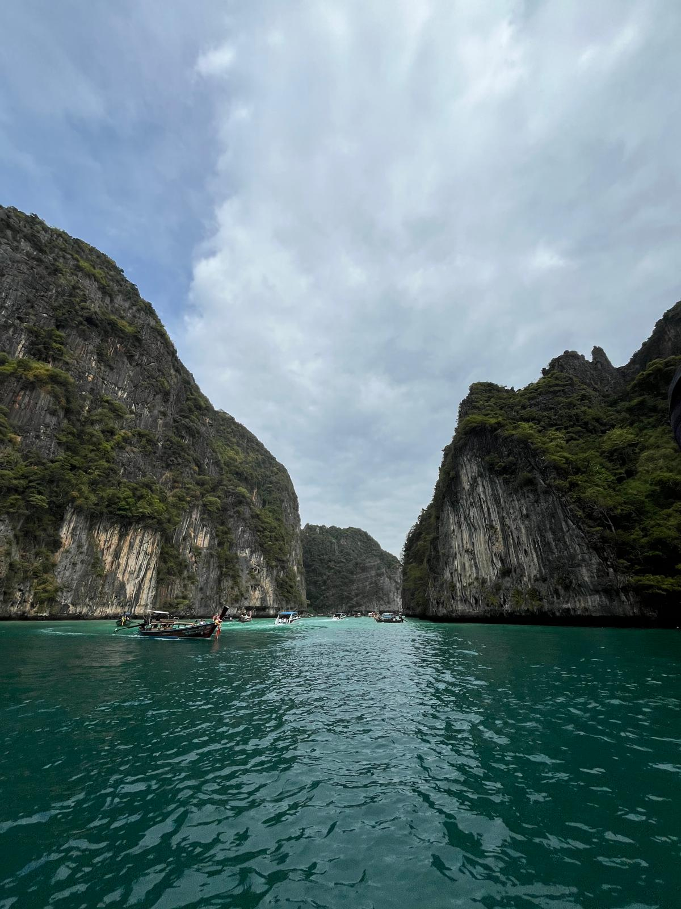 Bizim Phi Phi turundaki ilk durağımız Pi Leh Bay oldu. Ziyaret ettiğimizde oldukça kalabalık olmasına rağmen ortam ve enerji harikaydı. Gökyüzüne uzanan kayalıkların ihtişamı bizi adeta büyüledi. Hava şansımıza biraz kapalıydı ama bu renkleri seven bizler için bu durum, güzelliğini daha da öne çıkardı. Pi Leh Bay, yarı dairesel bir koy içinde yer aldığı için oldukça korunaklı ve sakin bir atmosfere sahip. Ancak popülerliği nedeniyle, özellikle yoğun turizm sezonlarında kalabalık olabiliyor.Phi Phi Leh - Maya Bay
İkinci durağımız olan Maya Bay, Phi Phi Leh Adası’nda (Phi Phi Adaları’nın
güneyinde) yer alan, gökyüzüne uzanan
kayalıklarla çevrili turkuaz sulara sahip büyüleyici bir koy. “The Beach” filmiyle ün
kazanan bu harika yer, Phuket çevresinde mutlaka görülmesi gereken yerlerden biri.
2018 yılında, aşırı turizm nedeniyle zarar gören mercanlar ve deniz yaşamının kendini
toparlayabilmesi için koy tamamen ziyarete kapatıldı. Başlangıçta sadece dört ay
sürecek şekilde
planlanan bu kapatma, birkaç kez uzatıldı ve Maya Bay 2022 yılında kademeli olarak yeniden
açıldı.
Eskiden sahile doğrudan yanaşan yüzlerce sürat teknesi, her gün binlerce turisti indiriyor; bu da
ekosistemi adeta yok ediyormuş. Sosyal medyada paylaşılan fotoğraflarda, koyun girişini arka plana
alarak poz vermeye çalışan kalabalık insan gruplarıyla dolu, nefes alınamayacak kadar yoğun bir
sahil görülüyormuş. Bugün ise Milli Park yetkilileri bu tabloyu değiştirmek için çok sıkı önlemler
uyguluyor.
Maya Bay’e erişim 2022’de belirli kurallar çerçevesinde yeniden düzenlendi. Artık
teknelerin
doğrudan sahile yanaşmasına izin verilmiyor; bunun yerine koyun arka kısmındaki Loh Sam
Bay
üzerinden giriş yapılıyor. Tekneler yolcularını indirip yaklaşık bir saat boyunca açıkta bekliyor.
Bölgeye girişte 400 Baht tutarında Milli Park ücreti alınıyor, ancak bu genellikle
günlük tur
ücretine dahil ediliyor.
İskeledeki iniş-çıkışlar biraz karmaşık ve telaşlı olabiliyor; küçük yüzer iskele
ve dar köprü
nedeniyle görevli ve rehberlerin yönlendirmeleriyle ilerleniyor. Rehberler genellikle önceden
uyarıyor: sahilde ne kadar kalınabileceği, nelerin yapılmaması gerektiği hakkında net bilgi
veriyorlar.
Örneğin; mercanlara basmak, balıkları beslemek, sahilden herhangi bir şey (hatta kum bile)
almak
yasak. Yüzmek de yasak, yalnızca diz hizasına kadar suya girilmesine
izin veriliyor. Ayrıca Phi Phi
Leh bir Milli Park olduğu için gerekli izin olmadan drone uçurmak da
kesinlikle yasak.
Tüm bu kısıtlamalar, Maya Bay’in doğasının korunması için uygulanıyor. Bugün tertemiz beyaz kumu,
berrak suları ve nefes kesen manzarasıyla bu koy hala büyüleyici.
Phi Phi Don - Loh Dalum Bay

Küçük olmasına rağmen, Loh Dalum, Phi Phi Adası’nı ziyaret eden turistler için oldukça popüler bir yerdir. Plaj boyunca birçok otel, restoran ve bar bulunuyor, biz burada kısa bir yemek molası verdik. Gece hayatı ve parti ortamlarını deneyimleme fırsatımız olmadı, ancak buranın çok canlı ve enerjik bir atmosfere sahip olduğunu rehberimizden öğrendik. Özellikle müzik ve dansın sabahın ilk saatlerine kadar devam ettiği söyleniyor, bu yüzden geceyi burada geçirmek isteyenler için oldukça hareketli bir lokasyon.
Phi Phi Seyir Noktası
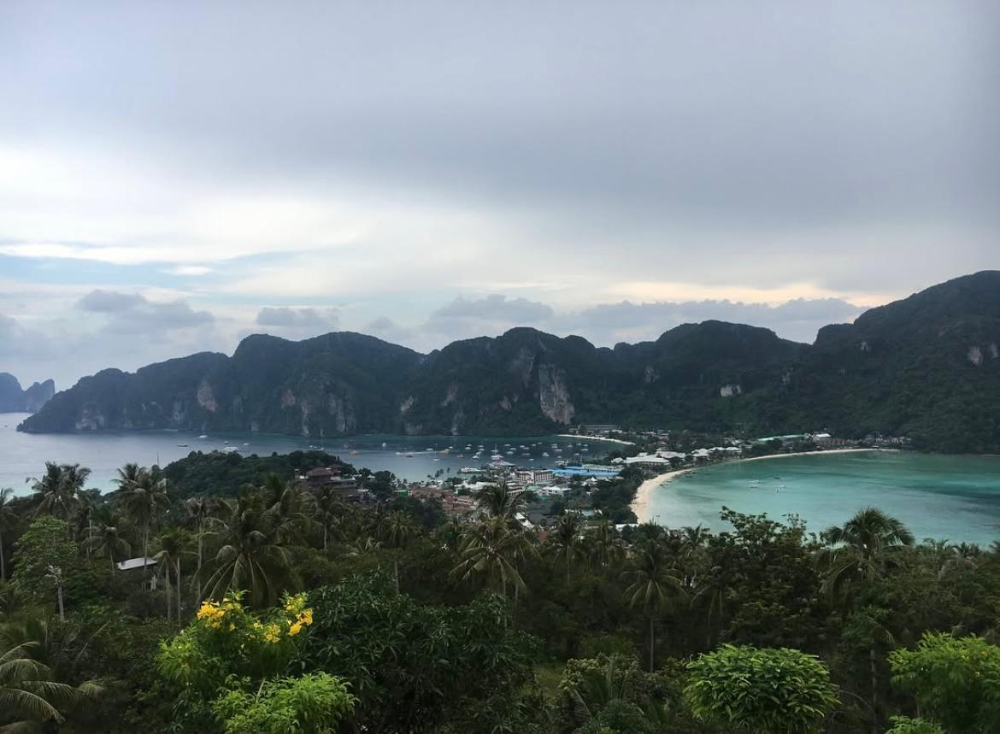Phi Phi Seyir Noktası, Phi Phi Adası’nda konaklayan herkesin mutlaka ziyaret ettiği
yerlerden biridir.
Yürüyerek kolayca ulaşabileceğiniz bu nokta, adanın ünlü “iki koy manzarası”
fotoğrafının çekildiği
yerdir. Solda Tonsai Körfezi, sağda ise Loh Dalum Plajı yer alır.
Phi Phi Seyir Noktası’na ulaşmak oldukça kolay ve yol boyunca yönlendirme tabelaları da mevcut.
Tonsai
Köyü’nün arka tarafına doğru yürüdüğünüzde giriş noktasını rahatlıkla bulabilirsiniz.
Merdivenleri
takip ederek tırmanmaya başlayın; çok zorlu bir yürüyüş değil, ancak hava
oldukça sıcak olabiliyor.
Ağaçların gölgesinde vereceğiniz küçük molalarda sivrisineklerin sizi bekliyor olabileceğini
unutmayın. Bu yüzden yanınıza bir sinek kovucu almak iyi bir fikir.
Bamboo Adası
Bamboo Adası, Phi Phi Adası’nın yakınında yer alan, bembeyaz kumsalları, berrak suları ve yemyeşil doğasıyla tam bir tropik kaçış noktası. Adı “Bamboo Island” (Bambu Adası) olsa da, adanın büyük kısmı aslında bambu değil, farklı bir ağaç türüyle kaplı — belki de eskiden bambular daha yoğundu. Genellikle Phi Phi Adası günübirlik turlarının son durağı olan bu huzurlu ada, Phuket veya Krabi’ye dönmeden önce denizin ve doğanın keyfini çıkarabileceğiniz sakin bir mola yeri.
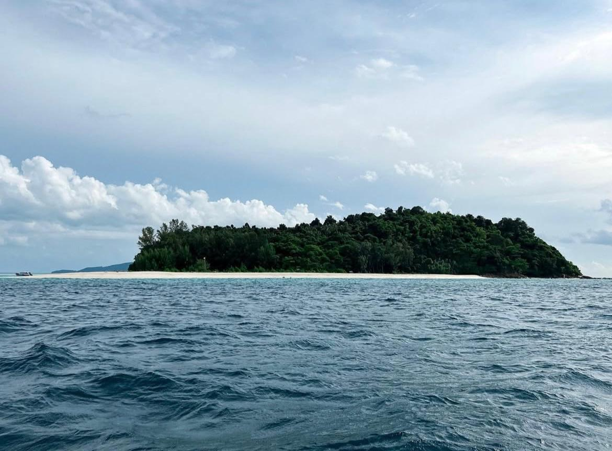 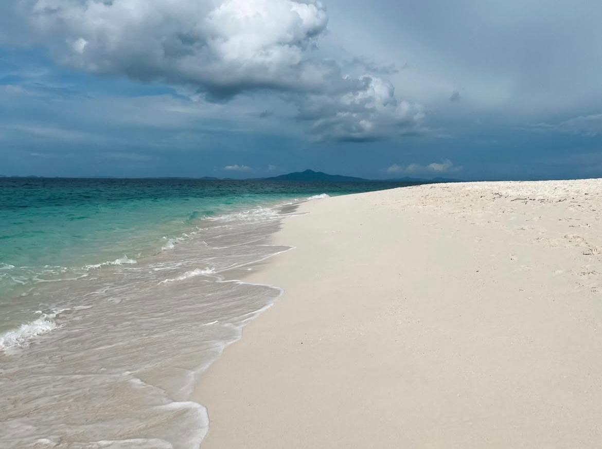Bizim turumuzun da son durağı Bamboo Adası oldu. Yaklaşık bir saat boyunca adada vakit geçirdik, denize girdik ve tertemiz suyun tadını çıkardık. Size tavsiyemiz; gözünüze kestirdiğiniz sakinliğe doğru yürüyün ve adanın yumuşacık kumu, ılık güneşi ve minicik huzurlu dalga sesleriyle baş başa kalabileceğiniz bir yer bulun. Gerçekten, Bamboo Adası’nın tadı en çok böyle çıkar.
Bamboo Adası’nda bu arkadaşa rastladık. Belli ki o da kalabalıktan kaçıp biraz “ağaç arası
huzur” molası vermiş😄
Ağacın arasına öyle bir yerleşmişti ki, sanki “beni kimse görmesin, huzurumu bozmasın” der
gibiydi.
Gerçekten adadaki en iyi “gizlenme noktası” ödülü ona verilebilirdi!
Bizim yolumuz bir gün yeniden düşerse, Phi Phi’ye kesinlikle öyle döneceğiz.
Turlara buradan göz atabilirsiniz: getyourguide.com
Phuket’te Gece Hayatı: Patong Deneyimi
Phuket’in en bilinen ve en kalabalık bölgesi olan Patong, adanın eğlence merkezi
olarak geçiyor. Gündüzleri uzun sahilinde su sporları yapanlarla dolup taşarken, geceleri bambaşka
bir atmosfere bürünüyor. Renkli ışıklar, yüksek müzik sesleri, kalabalık caddeler... Her şey
hareketli, canlı ve biraz da karmaşık.
Bangla Road adındaki meşhur cadde, Patong’un gece
hayatının kalbi sayılıyor. Güneş battıktan sonra trafiğe kapanıyor ve tamamen yayalara kalıyor. Her
adımda farklı bir müzik duyuyorsunuz, barlar, kulüpler, sokak gösterileri... Dünyaca ünlü DJ’lerin
performans sergilediği Illuzion ve Sugar Club gibi yerler,
eğlencenin en popüler duraklarından.
Biz ise bu kadar yoğun ve gürültülü bir atmosferin
içinde çok rahat
edemedik. Açıkçası Patong, bizim tarzımıza pek hitap eden bir yer değildi. Kalabalığı, sürekli
hareketi ve ticari havasıyla biraz yorucu geldi.
Yine de bir akşam gidip atmosferi görmek,
bu tarafın enerjisini hissetmek istedik. Bangla Road’da kısa bir yürüyüş yaptık, caddenin ritmini ve
kalabalığın enerjisini deneyimledik ama bizim için bir kez görmek yeterliydi.
Eğer
eğlencenin tam ortasında olmak, sabaha kadar müzik ve kalabalık içinde vakit geçirmek istiyorsanız
Patong tam size göre olabilir. Ama daha sakin, doğal ve Tayland’ın yerel havasını hissetmek
istiyorsanız, adanın güneyinde kalan Rawai veya Kata gibi bölgeler
çok daha keyifli alternatifler sunuyor.
Monkey Hill, Phuket

Monkey Hill’e giriş ücretsiz ve girişinde bir otopark var; arabanızı veya motorunuzu
burada
bırakıyorsunuz. Tırmanış zorlu değil ama uzun bir yürüyüş sizi bekliyor. Güvenliğiniz için girerken
yiyecek kontrolü yapılıyor — özellikle muz kesinlikle yasak.
Yürüyüşe başladığınızda maymunlar her yerde: yolun ortasında oturuyor, ağaçlarda gezinip sizi
izliyorlar. Hemen yiyecek bekleyen halleri var; kimi bir şeyi kapmış yerken, kimi şişeden su
içiyor. Evet, gözlerimle gördüm: bir maymun bir su şişesini açıp içiyordu!
Monkey Hill’de maymunlar hem sevimli hem de oldukça meraklı! Küçük bebek maymunlar inanılmaz
tatlıdır, ama anneleri kendilerini veya yavrularını tehdit altında hissederse beklenmedik tepkiler
verebilir. Yolun ortasında oturan büyük maymunlar ise adeta “patron”dur; onlara yaklaşmamak en
iyisidir. Temel kurallara uyarsanız saldırganlaşmazlar, ancak elinizde, cebinizde veya çantanızda
yiyecek
görürlerse dikkatlerini çekebilirsiniz. Onları asla elle beslemeyin; kazalar tatilinizi riske
atabilir.
Tam bu gördüğünüz fotoğrafı çekerken ufak bir sürprizle karşılaştık: Çantamda bir ağırlık
hissettim ve bir baktım, meraklı bir maymun çantama asılmış! Refleksle hemen çantayı bıraktım;
içinde pasaport ve paralar vardı.
Neyse ki hızlıca başka bir yiyecek fırlatarak ilgisini
dağıttık ve çantamızı geri aldık. Bu ufak olay, Monkey Hill’in ne kadar canlı ve tahmin edilemez
bir yer olduğunu bir kez daha gösterdi!😅


Tepeye çıkarken küçük bir Çin tapınağı var, dilerseniz durup gezebilirsiniz. Çok
büyük bir özellik
beklemeyin
ama Tayland’a yeni gelenler için her detay ilginç ve keyifli.
Monkey Hill’deki yürüyüş, güzel manzara ve maymunlarla eğlenceli karşılaşmalarla
dolu unutulmaz bir
deneyim sunuyor, ama her zaman dikkatli olmakta fayda var! 🐒🌿
Fillerle Bir Gün: Phuket’te Unutulmaz Bir Deneyim
Phuket’te fillerle vakit geçirdiğimiz deneyim, onların ne kadar zarif ve duygusal
canlılar
olduklarını anlamamız açısından unutulmazdı. Yıllarca insanlara hizmet etmiş filler için artık özgür
bırakılmaları yönünde çalışmalar ve organizasyonlar yürütülüyor. Ancak bu süreç kolay değil; yine de
şanslı olan filler bu projelerin bir parçası olup hayatlarına daha huzurlu bir şekilde devam
edebiliyorlar.
Biz, fillerle ormanda yürüyüş yaptık, onları besledik, oyun oynadık ve yıkadık. İlk
kez bir file
dokunduğumuz an gerçekten tarif edilemez bir histi. Göz göze geldiğiniz o an ise,
bakışlarındaki hüznü
hissediyorsunuz ama artık güvende olduklarını bilmek içinizi de rahatlatıyor. Gözlemlerimize göre
filler çok iyi bakılıyor, geniş bir yaşam alanına sahipler ve gerçekten mutlu
görünüyorlardı.
Ne yazık ki Phuket’te gezerken hâlâ bazı filler turistlere tur yaptırmak için bütün gün
çalıştırılıyor; bu da onların korunması ve rehabilite edilmesinin ne kadar değerli olduğunu bir kez
daha anlamamıza neden oldu.
Phuket Old Town
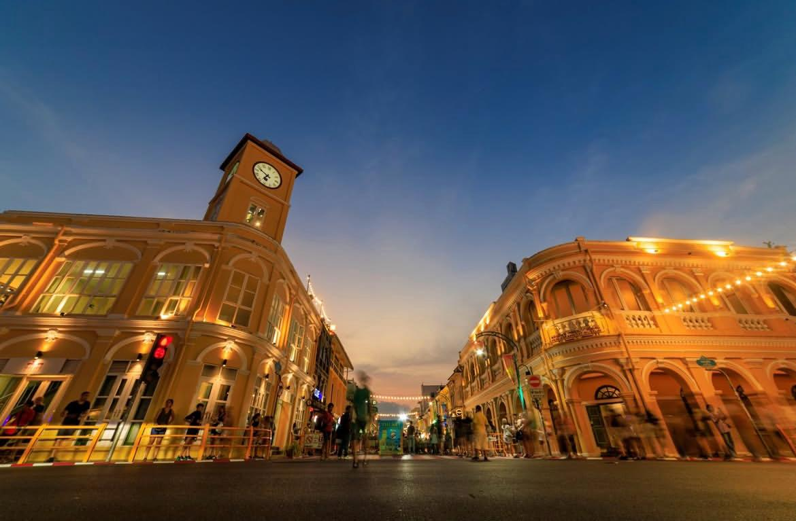Phuket, bugünkü turistik haline kavuşmadan çok önce, 17. yüzyılda kalay madenciliğiyle tanınan
zengin bir ticaret adasıymış. O dönemdeki şartlar, Avrupalı ve Çinli tüccarları adaya çekmiş;
özellikle
Çin’in Fujian bölgesinden gelen göçmenler burada yaşam kurmaya başlamış.
Bu göçmenler zamanla kendi topluluklarını oluşturup, bugün “Phuket Old Town” olarak
bilinen bölgede
dükkanlar ve evler inşa etmişler. O dönemden kalan Sino-Portekiz mimarisi, renkli cepheleri ve süslü
pencereleriyle adanın tarihini yansıtıyor. Yani Sino-Portekiz tarzı, Çin ve Avrupa
mimarisinin
birleşimiyle ortaya çıkan, 19. yüzyıl Güneydoğu Asya’sına özgü zarif bir mimari akımdır. Özellikle
Thalang Road, Dibuk Road ve Krabi Road boyunca yürürken bu dokuyu her adımda
hissedebilirsiniz.
 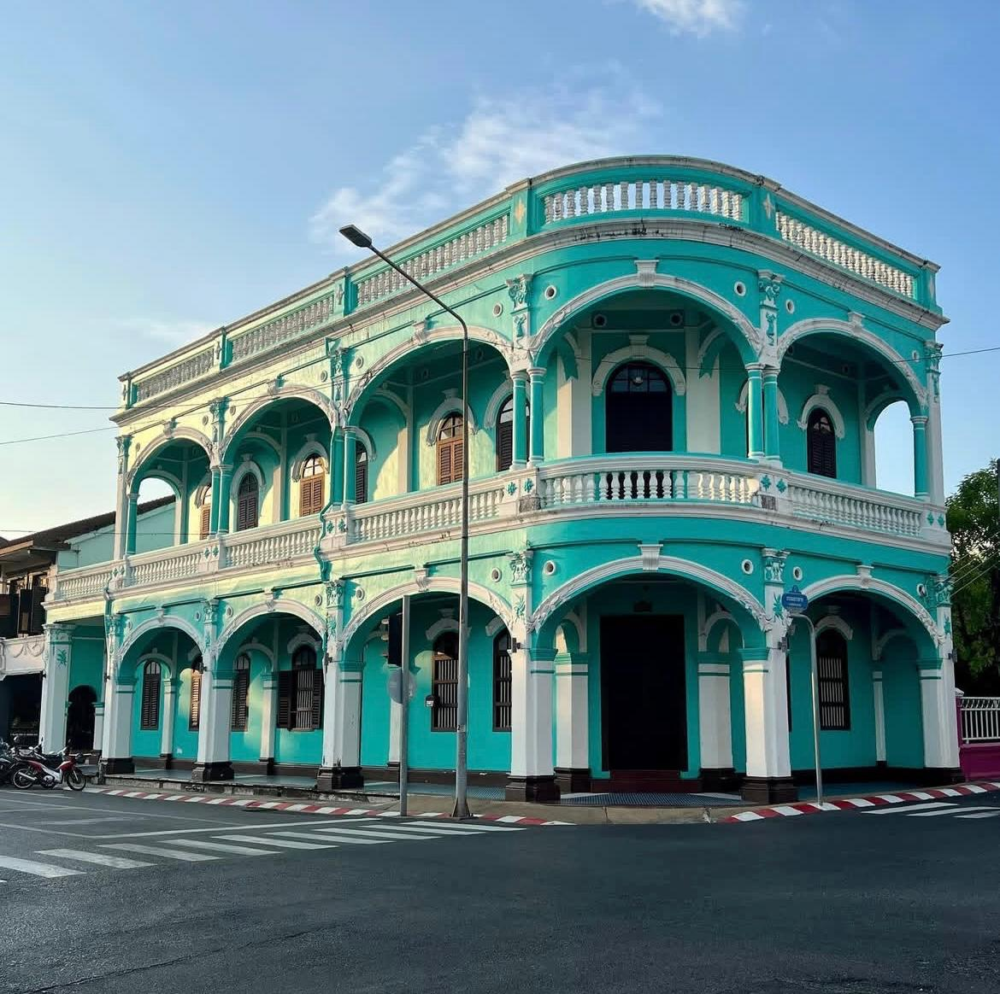
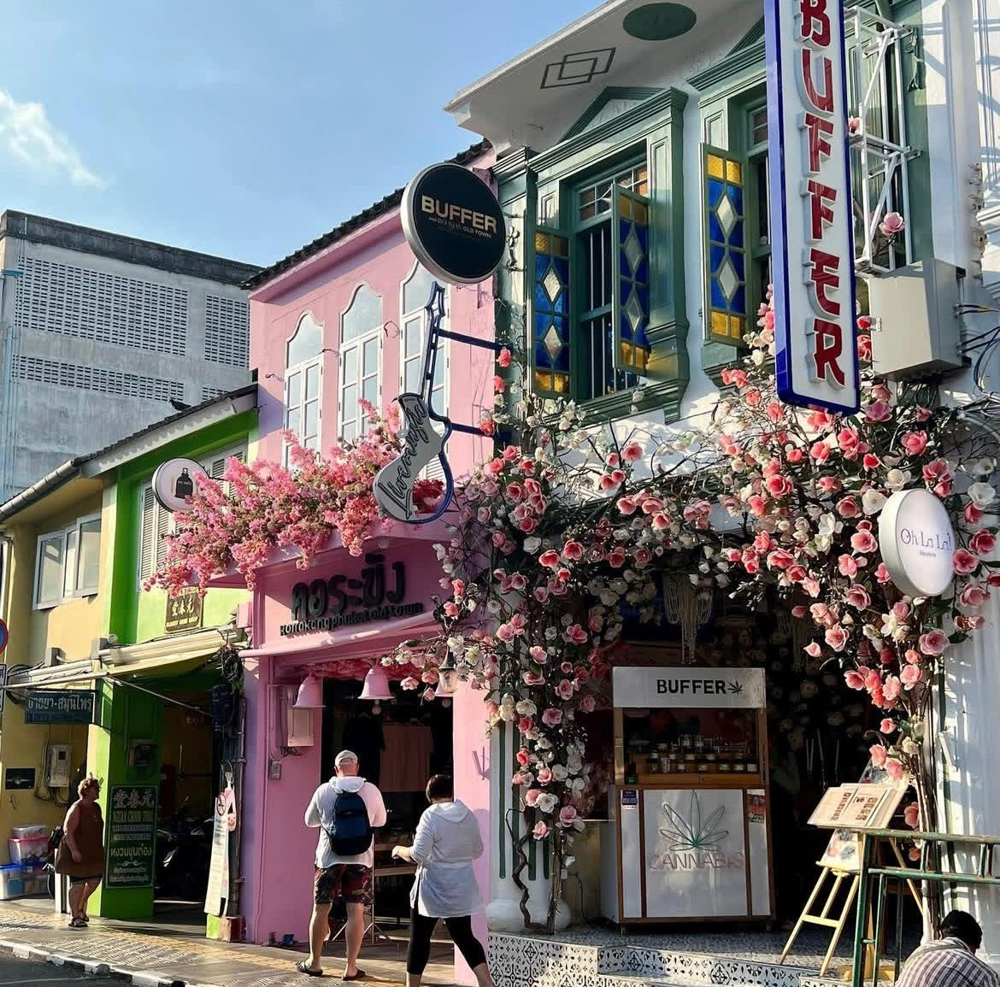
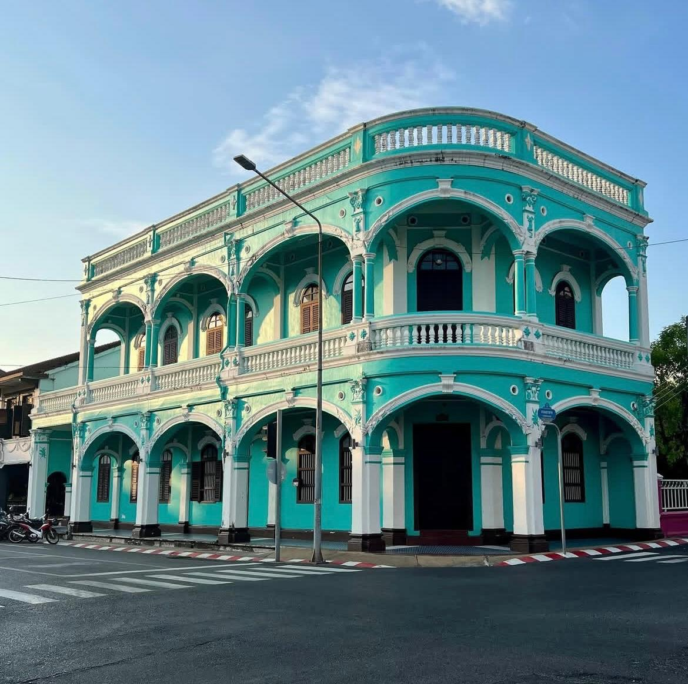
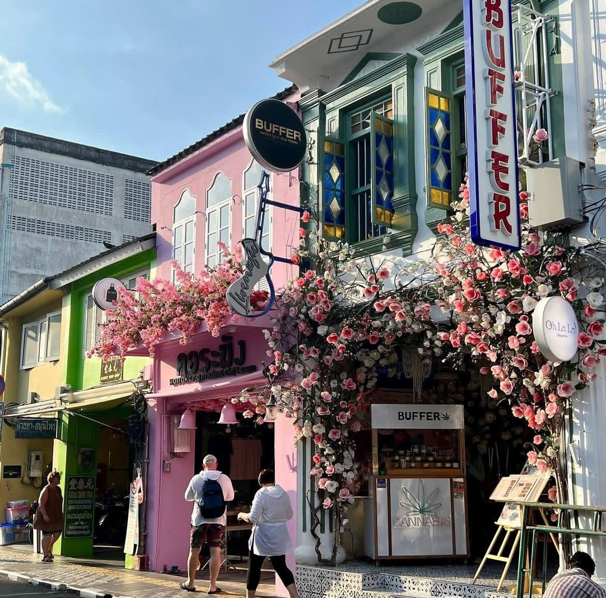
Phuket Old Town’un sokakları yaşayan bir açık hava müzesi gibi. Renkli
shophouse’lar, yani alt katı
dükkan üst katı yaşam alanı olan eski dönem ticaret evleri, bugün şehrin karakterini oluşturan
yapılar. Bu tarihi binaların çoğu artık butik kafeler, sanat galerileri ve mağazalar
olarak karşımıza çıkıyor. Her biri öyle güzel ki, geçmişin ruhunu harika bir dokunuşla
yaşatıyor.
Sokakları gezerken bir anda karşınıza çıkan duvar resimleri (street art), Old
Town’un bir diğer
sürprizi. Yerel sanatçılar inanılmaz güzel işler çıkarmışlar. Phuket’in kültürel ruhuna hem renk hem
de hikaye katmışlar. Fotoğraf çekmeyi seviyorsanız, kameranızı her an hazır tutun.
Phuket Old Town sadece tarihi ve sokaklarıyla değil, aynı zamanda yemek ve kafe kültürüyle de
sizi büyülüyor. Renkli sokaklarda dolaşırken karşınıza çıkan butik kafeler,
küçük barlar
ve yerel restoranların her biri kendine has bir atmosfere sahip. Hepsi çok güzel ve
ayrı bir havası
var. Size çekici gelen herhangi birinde oturup kısa bir mola verebilir, Phuket Old Town’ın sıcak
ruhunu ve
sokakların enerjisini hissedebilirsiniz.
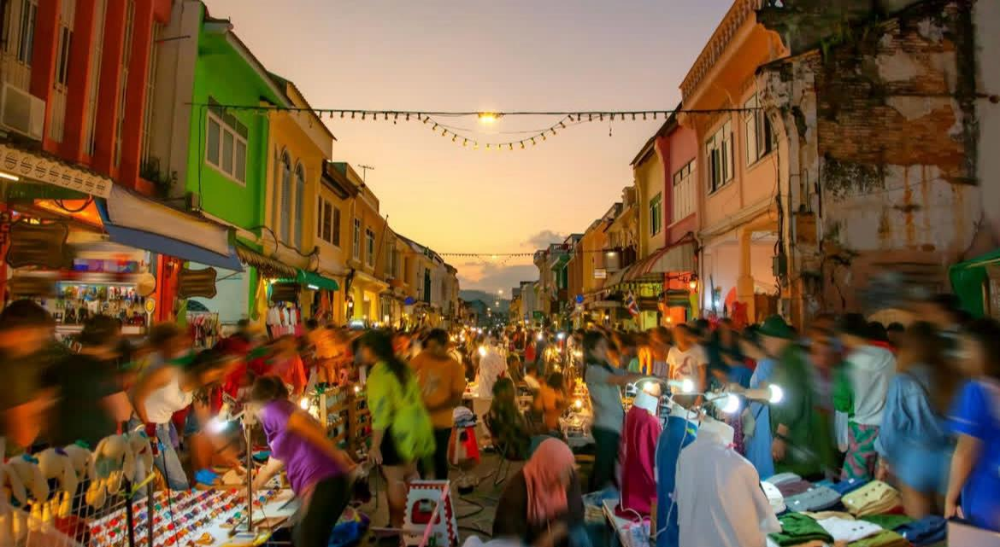
Burası Thalang Road, her Pazar akşamı trafiğe kapatılarak renkli bir gece pazarına
dönüşüyor. Biliyorsunuz Tayland gece pazarlarıyla meşhur. “Sunday
Walking Street Market” adıyla bilinen bu etkinlik, Phuket Old Town’un en canlı ve en
keyifli
deneyimlerinden biri. Caddenin iki yanına sıralanan tezgahlarda sokak lezzetleri, el işi ürünler,
takılar, sanat eserleri ve yerel atıştırmalıklar satılıyor. Aralarda ise Tayland müzikleri, dans
gösterileri ve minik performanslar caddenin enerjisini bambaşka bir havaya taşıyor.
Biz de oradayken bir sokak sanatçısına denk geldik, karşısına oturduk; elinde kalemleriyle, yüzümüze dikkatle bakarak bizi çizmeye başladı. Yoldan geçen insanlar merakla ne çizdiğini izliyor, gülümseyip yorumlar yapıyorlardı. Bizse ne çıktığını ancak yarım saat sonunda görebildik. Ve ortaya gerçekten eğlenceli bir hatıra çıktı. Gülmek garantili!
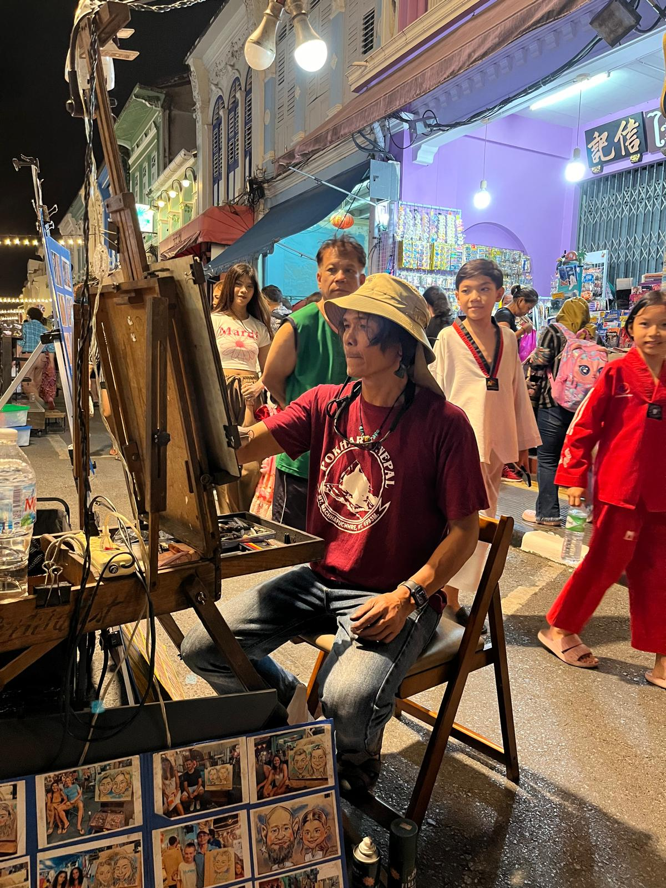
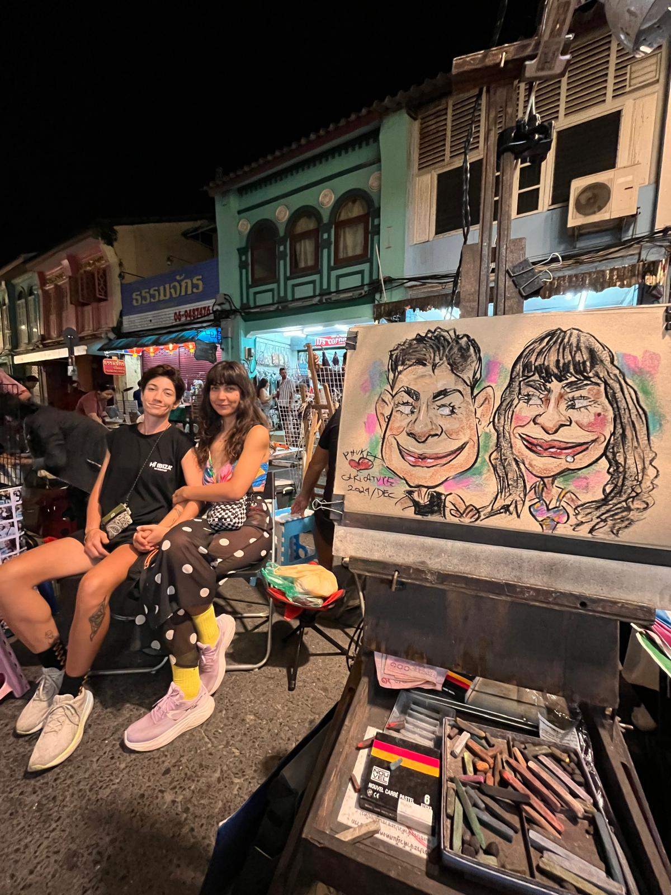
Phuket Old Town, adanın sahil hayatından çok daha fazlasını sunuyor: kültür, tarih, mimari ve yerel yaşamın birleştiği, renkli ve karakter dolu bir istikamet. Phuket’i gerçekten tanımak istiyorsanız, bu sokaklarda vakit geçirmek şart.
Phuket Rawai Bölgesi ve Kano Keyfi
Rawai, bizim için Phuket’in kalabalığından kaçıp nefes alabildiğimiz bir yer oldu.
Chalong’da
konakladığımız günlerde sık sık buraya kaçtık; hem yolculuğu hem de burada geçirdiğimiz zamanları
gerçekten çok sevdik. İlk durağımız Nai Harn Plajı oldu, ardından şans eseri
Ya Nui Plajını
keşfettik; iyi ki de keşfetmişiz!
Nai Harn Beach, Phuket’in en popüler ama hâlâ doğallığını koruyabilmiş plajlarından biri.
Adanın güneyinde, bir lagünle çevrili bu sahil; altın renkli yumuşak kumu, temiz denizi ve
manzarasıyla gerçekten çok güzel.
Ancak özellikle öğleden sonra saatlerinde biraz kalabalık olabiliyor. Hem yerel halk hem de
turistler yüzmek, güneşlenmek ya da sahil boyunca yürüyüş yapmak için burayı tercih ediyor.
Biz gittiğimizde çok kalabalıktı, bu yüzden biraz daha sakin bir yer arayışına girdik.
Nai Harn plajından çıkarken dikkatimizi bir tapınak çekti: Wat Nai Harn.
Wat Nai Harn, geleneksel bir Tay Budist tapınağıdır. Tapınağın mimarisi klasik Tay tarzında: altın
detaylar, kırmızı çatılar ve ejderha figürleri ile süslenmiş. İçeride büyük bir Buda heykeli,
duvarlarda ise Buda’nın hayatını anlatan renkli resimler bulunuyor. Tapınak alanı çok büyük olmasa
da oldukça düzenli ve huzurlu. Turistik kalabalıktan uzak, daha çok yerel halkın ibadet ettiği bir
tapınak olduğu için gerçek Tayland ruhunu hissedebileceğiniz bir atmosferi var.
Tayland’da gördüğümüz ilk tapınaklardan biriydi, bu yüzden bizim için etkileyiciydi.
Tapınağın önünde ise taze meyve suları hazırlayan seyyar bir teyze var. Buz gibi, dilediğiniz taze
meyvelerden
hazırladığı içecekleri bol bol dolduruyor.
Sıcakta serinlemek için gerçekten lezzetli bir mola noktası!
Tapınak sonrası rotamızı biraz daha güneye, Ya Nui Plajına çevirdik.
Burası Phuket’in en küçük ama en huzurlu koylarından biri.
Yaklaşık 200 metre uzunluğundaki bu küçük sahil, sakin deniziyle hemen kendini sevdiriyor.
Deniz sığ, berrak ve taşsız; bu da yüzme, şnorkel ve kano yapmak için mükemmel bir ortam sağlıyor.
Plajın hemen arkasında birkaç küçük yerel restoran ve içecek satıcısı bulunur.
Menüler genellikle Tay usulü kızarmış pirinç, taze deniz ürünleri ve meyve suyu çeşitlerinden
oluşuyor.
Biz Ya Nui’yi o kadar çok sevdik ki, sonraki üç gün boyunca sabahları buraya gelip kano yaptık.
Kano kiralamak kişi başı 100 Baht, su sabah saatlerinde neredeyse tamamen durgun, bu yüzden hem spor
gibi hissettirdi hem de inanılmaz keyifliydi.
 Aslında Ya Nui Beach'i tamamen tesadüfen bulduk.
Windmill Viewpoint’e çıktığımızda aşağıda, turkuaz sularla çevrili bir koy gördük
İşte o koy
Ya Nui’ydi!
Aslında Ya Nui Beach'i tamamen tesadüfen bulduk.
Windmill Viewpoint’e çıktığımızda aşağıda, turkuaz sularla çevrili bir koy gördük
İşte o koy
Ya Nui’ydi!
Windmill Viewpoint ise, Phuket’in en güney ucunda, Nai Harn Beach ve Ya Nui Beach
arasında yer alan
küçük ama
büyüleyici bir seyir noktasıdır.
Adını, tepenin üzerinde yer alan dev beyaz rüzgar türbininden (windmill) alır ve bu bölgenin en çok
fotoğraf çekilen noktalarından biridir. Buradan, bir yanda turkuaz renkli Ya Nui Koyu, diğer yanda
geniş Nai Harn Plajı, ve ufukta Andaman Denizi’nin sonsuz maviliği görünüyor.
Rawai’ye giden yollar da Phuket’in en güzel rotalarından biri.
İnişli çıkışlı, virajlı ama manzaralı yollar boyunca motor sürmek inanılmaz keyifli.
Bir gün yağmura yakalandık, toprak kokusu ve yeşilin tonlarıyla çevrili o an, gerçekten unutulmazdı.
Kısacası; Phuket’in güney ucunda yer alan Rawai, adanın en turistik bölgelerinden
biraz uzakta, daha
otantik, yerel yaşamın korunduğu beş yıldızlı otellerden çok, küçük butik oteller, aile işletmesi
restoranlar ve sahil boyunca uzanan balıkçı teknelerinin olduğu bir yer. Eğer kalabalıktan uzaklaşıp
Tayland’ın “gerçek” halini
görmek istiyorsanız, Rawai sizi mutlu edecek türden bir bölge.
Yorum Yaz
E-posta adresiniz yayımlanmayacaktır. Gerekli alanlar * ile işaretlenmiştir.